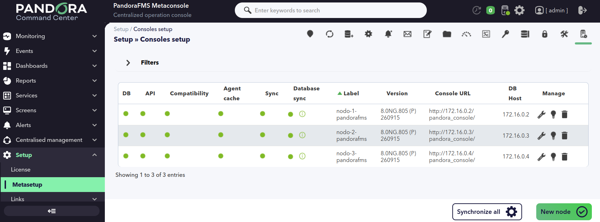
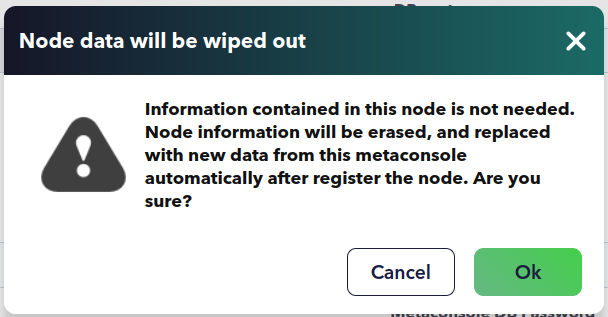
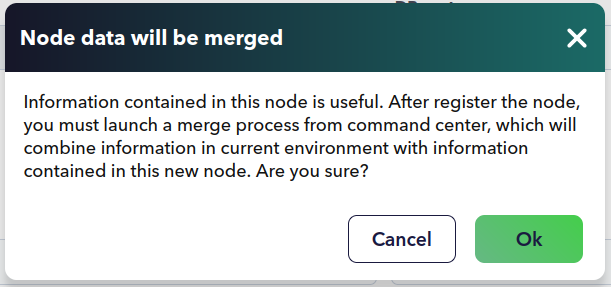

Command Center¶
Introducción: qué es el Command Center y cuándo usarlo¶
Un solo servidor de Pandora FMS llega hasta donde llega. 1.1 · Instalación sitúa el techo de un nodo en el entorno de las 80.000 métricas: por encima de ahí no se trata de comprar una máquina más grande, sino de repartir el trabajo entre varias. El Command Center es la pieza que permite hacerlo sin renunciar a una visión única.
El Command Center es una interfaz web que presenta y opera como una sola varias instalaciones de Pandora FMS, llamadas nodos o instancias. No las sustituye: cada nodo conserva su servidor y su base de datos, y sigue funcionando por su cuenta. El Command Center añade su propia consola web y su propia base de datos, y desde ahí los coordina.

Gracias a esa capa se monitorizan cientos de miles de dispositivos sin mirar nodo por nodo. La escalabilidad es horizontal: cuando el entorno se queda corto se añade un nodo, no se agranda el que ya hay. Y como el punto de acceso es único, el Command Center sirve también para dar servicio multiempresa desde una sola consola: una empresa entra por ahí y ve lo suyo, sin que la infraestructura se duplique.
¿Cuándo conviene montarlo? Hay tres señales claras:
- Un solo nodo se queda corto. Es el caso de las instalaciones que superan el orden de magnitud que aguanta una consola suelta.
- Hay varias instalaciones y se quieren ver juntas. El Command Center las presenta como una sola y permite operar sobre todas.
- Se da servicio multiempresa. Un único punto de acceso sirve a varias empresas y, dentro de cada una, a varios usuarios.
La sincronización es automática
La sincronización entre el Command Center y los nodos se realiza de forma automática gracias a la Merging tool, de la cual hablaremos más adelante.
Dónde encaja esta pieza dentro del resto de la arquitectura está en 1.2 · Introducción y arquitectura. La licencia, que es adicional a la de los nodos y se cuenta por nodo activo, se explica en 1.5 · Licenciamiento.
Arquitectura y sincronización¶
Arquitectura: nodos y nodo central¶
Un nodo (o instancia) es una instalación normal de Pandora FMS: una consola web como capa de presentación, un servidor como capa de acceso a datos y su propia base de datos. El Command Center es otra instalación, con su servidor y su base de datos, pero no monitoriza nada por sí mismo: coordina. La arquitectura tiene dos tipos de pieza:
- un nodo central, el Command Center, con su propio servidor;
- tantos nodos servidores como se necesiten.
Hay dos servicios que solo existen cuando hay un Command Center por encima, y que ya presenta 1.2 · Introducción y arquitectura:
- Migration Server: mueve agentes de un nodo a otro cogiendo las tareas de una cola priorizada.
- Autoprovision Server: recibe a los agentes que llegan sin destino y decide en qué nodo se dan de alta. Su funcionamiento se desarrolla en 6.6 · Mecanismos de autoprovisión.
De la relación entre el Command Center y cada nodo se derivan tres condiciones que conviene tener resueltas antes de montar nada:
| Condición | Detalle |
|---|---|
| Comunicación bidireccional | El Command Center tiene que poder alcanzar a cada nodo, y cada nodo al Command Center. |
| Nodos independientes entre sí | Los nodos no necesitan comunicarse entre ellos en ningún momento; solo con el nodo central. |
| Reloj sincronizado | La hora del Command Center y la de los nodos debe ser la misma. Cuanto mejor sincronizados estén los relojes, más exactos serán los datos que se ven desde arriba. |
Las condiciones de red y los puertos implicados se detallan en 1.1 · Instalación.
¿Dónde vive cada dato?¶
Antes de buscar algo en el sitio equivocado conviene tener claro qué vive en cada lado. Esta es la tabla que evita perder media tarde:
| Dónde vive | Qué |
|---|---|
| Solo en el nodo | Agentes, módulos y su histórico, alertas y políticas en ejecución. |
| Solo en el Command Center | La configuración del propio Command Center, los componentes, las plantillas de informes, los mapas de red, los mapas visuales y los filtros de NetFlow. |
| En ambos, replicado | Usuarios y perfiles, grupos, plantillas, acciones y comandos de alerta, etiquetas y categorías. |
Los usuarios, grupos, plantillas y etiquetas están en los dos lados porque
tienen que estar donde se usan. Las tablas propias del Command Center
(tmetaconsole_*) y su sincronización se describen en 10.1 · Esquema de la
base de datos.
Cómo se obtiene y modifica la información¶
El Command Center obtiene y modifica la información de los nodos de dos formas distintas, y saber cuál aplica a cada dato decide dónde se diagnostica cuando algo falla:
- Modo activo. El Command Center entra por sí mismo en la base de datos o en la API del nodo y administra lo que le corresponde: agentes, módulos, alertas y políticas.

- Modo pasivo. El nodo escribe hacia la base de datos del Command Center lo que se genera de forma continua. El caso típico son los eventos: el nodo los replica y, a partir de ahí, su gestión se hace desde arriba.

Según de qué modo dependa un dato, el problema se busca en un sitio u otro. Si los eventos no llegan, la causa suele estar en la configuración de replicación del nodo; si un agente no se administra desde arriba, la causa está en la conexión del Command Center con ese nodo. Los síntomas concretos y por dónde empezar están en 12.8 · Entornos grandes.
Instalación y puesta en marcha¶
Requisitos y particularidades¶
El Command Center no es un producto aparte: se instala el mismo software que en cualquier instalación de Pandora FMS —consola web, servidor y base de datos— y se convierte en Command Center al activar una licencia de Command Center (el detalle, en «Activación de la licencia»). No hay que instalar nada más.
Los nodos normales se van uniendo después, desde Management → Settings → System Settings → Command Center (ver «Alta y registro de nodos»).
Frente a un nodo, hay tres particularidades: su propia licencia, su servidor en marcha y que una instalación no puede ser a la vez nodo y Command Center. El procedimiento genérico de instalación de la consola es el de 1.1 · Instalación; aquí va solo lo diferencial.
| Requisito | Detalle |
|---|---|
| Edición | Pandora ONE, Pandora NMS o Pandora RMM, más una licencia de Command Center adicional (ver «Activación de la licencia» y 1.5 · Licenciamiento). |
| Instalación | El mismo software que un nodo (consola web, servidor y base de datos). No hay paquete propio: lo que cambia el papel de la instalación es la licencia. El procedimiento general está en 1.1 · Instalación. |
| Servidor de Pandora FMS | El servidor de la propia instalación tiene que estar en marcha: de él dependen la migración de agentes, el aprovisionamiento y la cola de políticas. |
| Comunicación | Bidireccional entre el Command Center y cada nodo (ver «Arquitectura: nodos y nodo central»). |
| Reloj | La hora del Command Center y la de los nodos debe estar sincronizada. |
| Puertos | 80, 443 y 3306 entre el Command Center y los nodos. La tabla completa está en 1.1 · Instalación. |
| Sistema operativo | RHEL, Rocky Linux y AlmaLinux 9 o 10, o Ubuntu Server 22.04 o 24.04. Para el Command Center se recomienda RHEL, Rocky Linux y AlmaLinux. |
Un servidor, un papel
No se puede usar a la vez la consola web de Pandora FMS y el Command Center. Si la instalación se activa como Command Center, esa consola deja de ser un nodo.
Activación de la licencia¶
La licencia se activa desde la propia consola web, como la de cualquier instalación. Se accede a la URL de la consola:
http://<dir_IP_o_URL>/pandora_console/
y aparece la pantalla de bienvenida en la que se acepta la licencia.
La diferencia con un nodo es qué licencia se introduce. Para levantar el Command Center hace falta una licencia de Command Center; si se activa una licencia de nodo, lo que aparece es la consola normal, no el Command Center. Al introducir una licencia de Command Center en una instalación que era nodo, la consola avisa de que va a cambiar de papel y, al confirmar, la instalación pasa a ser Command Center sin reinstalar nada. La pantalla de licencia muestra después el tipo contratado —consola o Command Center— junto al resto de límites. El modelo de licencia y el significado de cada campo están en 1.5 · Licenciamiento.
Metalicencia¶
La metalicencia es la licencia única del entorno. Se pone en el Command Center y cubre a todos los nodos: se pueden crear tantos nodos como se quiera sin volver a licenciar cada uno, siempre que no se supere el total de agentes contratado. Las réplicas de alta disponibilidad no cuentan. Para nodos que deban permanecer desconectados del Command Center durante periodos largos hay que hablar con el equipo comercial de Pandora FMS.
La licencia va primero. Sin ella la instalación no funciona como Command Center y no hay dónde dar de alta los nodos. A partir de ahí, el orden es este:
- Activar la licencia del Command Center. Se hace en la instalación, cuando todavía es un nodo: en Management → Settings → License. Es la misma pantalla que la de cualquier nodo; lo que cambia es la licencia que se introduce (ver «Activación de la licencia»).
- Dar de alta cada nodo en Setup → Metasetup → Consoles setup, con su propia clave de licencia generada y validada en la consola del nodo (ver «Alta y registro de nodos»).
-
Dejar los estados en verde. Si alguno no lo está, el botón Synchronize all de Consoles setup recorre los nodos registrados y fuerza su sincronización.

-
Repartir la metalicencia. Con los nodos ya en orden, se vuelve a Setup → License —ahora ya es el menú del Command Center— y se pulsa Validate: guarda la licencia del Command Center y la propaga a todos los nodos.

Un nodo que no valida (indicador Sync en rojo) tiene una clave que no
coincide con la del Command Center o no está marcado como nodo
(node_metaconsole). El botón de sincronización lo resuelve. Una vez propagada,
la licencia del Command Center activa los nodos automáticamente, sin tener que
activarlos uno a uno.
La licencia agregada suma el consumo de todos los nodos activos; las réplicas no entran en la cuenta. Los detalles del modelo están en 1.5 · Licenciamiento.
Alta y registro de nodos¶
Este es el procedimiento que deja al Command Center con nodos que gestionar. Se hace en Setup → Metasetup → Consoles setup, con el botón New node.

Al dar de alta un nodo hay que conocer una serie de datos de esa instalación. Los campos son estos:
| Campo | Qué es | Valor por defecto |
|---|---|---|
| Label | Etiqueta con la que se identifica el nodo en el Command Center. | Sin valor |
| Console URL | Ruta completa a la consola del nodo, sin index.php; conviene terminarla con barra. |
Sin valor |
| API password | Contraseña de la API del nodo. | Sin valor |
| Console user | Usuario de consola del nodo, para el acceso delegado. | Sin valor |
| Console password | Contraseña de ese usuario. | Sin valor |
| DB host | Dirección de la base de datos del nodo. | Sin valor |
| DB name | Nombre de la base de datos. | Sin valor |
| DB user | Usuario de la base de datos. | Sin valor |
| DB password | Contraseña de la base de datos. | Sin valor |
| DB port | Puerto de la base de datos. | 3306 |
Las credenciales de API y de consola (contraseña de la API, usuario y contraseña de consola) se guardan juntas como token de autenticación del nodo. La URL de la consola debe terminar en barra: el Command Center la usa tal cual para construir las llamadas.

La conexión a la base de datos del nodo admite SSL. Al activar Enable SSL aparecen los campos de la clave y el certificado del servidor, el certificado y la ruta de la CA, y la verificación del certificado del servidor:
| Campo | Qué es |
|---|---|
| SSL server key | Fichero PEM con la clave SSL del servidor MySQL. |
| SSL server cert | Fichero PEM con el certificado de esa clave. |
| SSL CA cert | Fichero PEM con la lista de certificados emitidos por una autoridad de certificación. |
| SSL CA path | Directorio con certificados de una autoridad de certificación, en formato PEM. |
| SSL verify server cert | Si se activa, verifica el certificado en la conexión (CN); si no coincide, no conecta. |
Campos avanzados. El bloque de opciones avanzadas define la conexión en sentido contrario: la que establecerá el nodo contra la base de datos del Command Center. Aquí se indican el host, el nombre, el usuario, la contraseña y el puerto de la base de datos del propio Command Center, y su SSL. Si no se rellenan, se toman los valores de la propia configuración del Command Center.

Los dos botones de alta. Al guardar, el botón que se elige decide qué pasa con los datos que ya hubiera en el nodo:

-
Register empty node: los datos del nodo se borran y se reemplazan por los del Command Center. Se usa cuando el nodo no tiene nada que conservar.

-
Register node with data to merge: el nodo se registra pero queda desactivado, a la espera de que se lance una fusión que combine lo que hay en el entorno con lo que trae el nodo. Se usa cuando el nodo sí tiene datos que interesan.



Cuándo aparecen estos botones
Los dos botones de alta aparecen cuando la gestión centralizada está activa. Si no lo está, el alta se hace con un único botón Add.
Indicadores de comprobación. En la lista de nodos configurados hay varios indicadores que comprueban la conexión y el estado de cada nodo. Los chequeos se lanzan al cargar la vista y también se pueden repetir uno a uno haciendo clic sobre ellos:

| Indicador | Qué comprueba |
|---|---|
| DB | La conexión a la base de datos del nodo con las credenciales indicadas. En rojo, informa del problema: faltan credenciales, no se alcanza el host o la base de datos no existe. |
| API | Una prueba contra la API del nodo con la contraseña de API y las credenciales de consola. Distingue entre error de autenticación, error de conexión y host no resoluble. |
| Compatibility | Conecta a la base de datos del nodo y compara su maintenance release (MR) con el del Command Center. Si no coinciden, el nodo no es compatible. |
| Agent cache | Que los últimos estados de agentes y módulos del nodo se guarden correctamente en la base de datos del Command Center. |
| Sync | Que la licencia del nodo coincida con la del Command Center y que el nodo esté marcado como tal (node_metaconsole). |
| Database sync | Solo con la gestión centralizada activa: consulta la cola de sincronización y avisa si hay consultas pendientes de aplicar. |
Los tres primeros (DB, API y Compatibility) tienen que estar en verde para que el nodo esté bien enlazado y empiecen a verse sus datos. El resto informa de su parcela. La columna Version muestra la versión del servidor del nodo.
La misma frase de cifrado en todas partes
Si está habilitado el cifrado de la base de datos, todos los nodos y el
Command Center deben usar la misma encryption_passphrase. Los datos de
conexión de cada nodo se guardan cifrados con esa frase; si no coincide, el
Command Center no puede descifrarlos. Ver 9.5 · Cifrado de la base de
datos.
Ejemplo. Para dar de alta un nodo en 192.168.80.37 con la base de datos en
SSL:
- En Consoles setup, pulsar New node.
- Rellenar Label con
nodo-37, Console URL conhttps://192.168.80.37/pandora_console/(con barra final), las credenciales de API y consola, y los datos de la base de datos: host192.168.80.37, nombrepandora, usuariopandora, puerto3306. - Activar Enable SSL, indicar la clave y el certificado del servidor MySQL y el certificado de la CA, y activar SSL verify server cert.
- Guardar con Register empty node si el nodo está recién instalado, o con Register node with data to merge si ya tenía datos.
- Volver a la lista y comprobar que DB, API y Compatibility están en verde. Si alguno queda en rojo, hacer clic sobre él para ver el motivo.
La referencia de campos, con su valor por defecto, vive en el apartado 22.2 de 9.2 · Referencia completa de configuración de la consola; aquí está el procedimiento.
Tareas de la consola del Command Center¶
Hay tres cosas que conviene dejar funcionando para que el resto del capítulo funcione: la programación de informes, el acceso a la API y la autoautenticación hacia los nodos.
Programación de informes. Para lanzar el mantenimiento de base de datos
(pandora_db) hacen falta los paquetes del servidor instalados en la máquina
del Command Center, y ese proceso programado en el cron cada hora. Si además
se usan los informes bajo demanda (enviados por correo), hay que programar la
extensión de cron igual que en una consola normal, añadiendo una línea a la
crontab que llame a cron.php:
* * * * * <usuario> wget -q -O - http://x.x.x.x/pandora_console/enterprise/extensions/cron/cron.php >> /var/www/pandora_console/log/console.log
Las tareas de consola y su programación se explican con detalle en 2.5 · Tareas de consola.
API. Para que el Command Center pueda hablar con la API de cada nodo hacen falta:
- un usuario y una contraseña válidos en el nodo;
- la contraseña de la API configurada en el nodo;
- la lista de direcciones IP con acceso a la API en el nodo, donde se admite
el asterisco (
*) como comodín para dar acceso a todas las direcciones o a una subred.
La API y sus credenciales se documentan en 9.11 · Integración y automatización. Webhooks y API REST.
Autoautenticación. El Command Center salta a la consola web de un nodo en
varios sitios; por ejemplo, al hacer clic en el agente asociado a un evento, se
abre la vista de ese agente en la consola del nodo al que pertenece. Para que
ese salto no vuelva a pedir credenciales se usa la autoautenticación: la
opción Auto login in node, en Metasetup → General setup, que corresponde
al token JWT_signature y viene activada por defecto.
Merging tool: unificar las bases de datos¶
Unificar no es copiar. Cuando hay varios nodos, lo normal es que el mismo grupo, la misma etiqueta o la misma plantilla existan en más de uno con ajustes distintos. La Merging tool decide, para cada elemento, qué versión se queda, y deja el entorno listo para gestionarse desde el Command Center. Por eso se lanza con los servidores parados y con copia de seguridad, no un viernes a las seis de la tarde.
Qué es y cuándo hace falta¶
La Merging tool recorre las bases de datos de todos los nodos y del Command Center y unifica los elementos que se gestionan de forma centralizada. Un entorno que ya estaba centralizado con el sistema de sincronización anterior tiene que pasar por aquí una vez.
Solo entran en la fusión los nodos configurados en el Command Center que no estén deshabilitados. El proceso establece un orden de prioridad entre el propio Command Center y los nodos: los de arriba mandan sobre los de abajo. Ese orden es el que resuelve los conflictos cuando un mismo elemento existe en varios sitios con configuración distinta.

Arriba de la lista está el propio Command Center y, debajo, cada nodo registrado, con las columnas DB y API comprobando la conexión con cada uno. El orden se cambia arrastrando las filas por el asa lateral y se guarda al soltar.
Cómo se decide qué configuración gana
Si dos o más elementos tienen el mismo campo único, se toma la configuración del que está en el nodo con mayor prioridad. Si el mismo elemento aparece repetido dentro del nodo de mayor prioridad, gana el de ID más bajo.
Las políticas de monitorización son un caso aparte: sus módulos, alertas, colecciones y demás elementos se consideran elementos independientes de la política y se fusionan por su cuenta.
¿Cuándo hace falta lanzarla?
- Al pasar a un Command Center un entorno que ya existía con varios nodos.
- Al incorporar a un entorno centralizado un nodo que ya tiene datos.
- Al actualizar un entorno centralizado con el antiguo sistema de sincronización.
Qué centraliza¶
La Merging tool se lleva al Command Center los elementos que después se gestionan desde él. Para cada uno, dos versiones se consideran «el mismo elemento» cuando coinciden en una clave de identidad. Casi todo se identifica por nombre; los usuarios son la excepción, y unos cuantos elementos llevan dos campos en la clave.

| Elemento | Clave de identidad |
|---|---|
| Usuarios | ID de usuario (id_user) |
| Perfiles de usuario | Nombre |
| Grupos de agentes | Nombre |
| Colecciones de ficheros | Nombre corto (short_name) |
| Plantillas de alerta | Nombre |
| Comandos de alerta | Nombre |
| Acciones de alerta | Nombre |
| Plugins de servidor | Nombre y ejecución |
| Sistemas operativos | Nombre |
| Etiquetas de módulos | Nombre |
| Categorías de módulos | Nombre |
| Grupos de módulos | Nombre |
| Grupos de componentes | Nombre |
| Componentes de red | Nombre |
| Componentes locales | Nombre y sistema operativo |
| Módulos de inventario | Nombre y sistema operativo |
| Políticas de monitorización | Nombre |
| Módulos de políticas | Nombre dentro de una política del mismo nombre |
| Módulos de inventario de políticas | Nombre y sistema operativo dentro de una política del mismo nombre |
| Plugins de políticas | Ejecución dentro de una política del mismo nombre |
| Colecciones de políticas | Nombre corto dentro de una política del mismo nombre |
| Alertas y alertas externas de políticas | Plantilla sobre el mismo módulo dentro de una política del mismo nombre |
| Acciones de alertas y alertas externas de políticas | Nombre sobre la misma plantilla y el mismo módulo dentro de una política del mismo nombre |
| Agentes dentro de las políticas | Pertenencia a políticas del mismo nombre; se descartan los registros del Command Center |
| Agentes | Gestión en el nodo; borrado en el Command Center |
Una vez fusionado, las secciones donde se gestionan estos elementos solo se pueden gestionar desde el Command Center. Si se accede a ellas desde un nodo, solo se pueden listar: desaparecen las opciones de edición y creación y aparece un aviso de que el entorno está en modo centralizado, con un enlace a la sección correspondiente del Command Center.

Revisa autocreate_group después de fusionar
El parámetro autocreate_group de pandora_server.conf apunta a un ID de
grupo. Si ese grupo cambia de ID durante la fusión, los agentes nuevos
acabarán en un grupo equivocado o inexistente. Revísalo en todos los nodos
después de fusionar.
El detalle de cómo se fusionan las políticas está en 2.10 · Políticas de monitorización.
Requisitos previos¶
Antes de pulsar Unify databases, el proceso comprueba una lista de requisitos. Si alguno falla, la fusión no arranca y el error indica qué queda pendiente.
| Requisito | Detalle |
|---|---|
| Conexión del Command Center a los nodos | El Command Center tiene que alcanzar la base de datos y la API de todos los nodos. En la configuración de consolas los indicadores deben estar en verde. |
| Conexión de los nodos al Command Center | Las consolas de los nodos tienen que alcanzar la base de datos del Command Center. Solo es un problema si consolas y servidores viven en máquinas distintas. |
| Configuración de Enterprise en el nodo | En Management → Settings → System Settings → Command Center del nodo, los datos del Command Center (base URL, host, nombre, puerto, usuario y contraseña de su base de datos) tienen que ser correctos. |
| API del Command Center | Los servidores de todos los nodos tienen que alcanzar la API del Command Center. Se recomienda configurar la Public URL en el Command Center. |
| API del nodo | Los servidores de cada nodo necesitan su configuración de API correcta: console_api_url y console_api_pass en pandora_server.conf, o la Public URL en la configuración de la consola. Si no se configura, el servidor tiene que estar en la misma máquina que su consola. |
| Histórico de cada nodo | Cada nodo tiene que poder conectarse a su propia base de datos de histórico. |
| Versión | Todos los nodos y el Command Center en la misma versión. |
| Maintenance release | Todos en el mismo MR. |
| Tamaño de colección | Todos con el mismo tamaño máximo de colección configurado. |
| Memoria de PHP | memory_limit a -1 (sin límite) en todos, solo durante la fusión. |
| Subida de ficheros | post_max_size de cada nodo mayor o igual que el del Command Center y, a su vez, mayor o igual que upload_max_filesize y que la colección más pesada. |
upload_max_filesize |
En cada nodo, mayor o igual que en el Command Center y que la colección más pesada. |
| Espacio en disco | Suficiente en el directorio attachment de todos para los respaldos de base de datos y colecciones. |
| Fecha y hora | Correctamente configurada en todos (se recomienda NTP). |
| Tarea cron de la consola | Cada nodo tiene que tener su tarea cron de consola creada; si nunca se ha accedido a su consola, el proceso pide iniciar sesión en el nodo antes. |
| Extensión ZIP | La extensión zip de PHP tiene que estar cargada. |

Devuelve php.ini a su sitio
Terminada la fusión, restaura los valores de php.ini, sobre todo
memory_limit. Cada vez que se toca php.ini hay que reiniciar Apache
(httpd) y PHP-FPM para que los cambios surtan efecto.
Recomendaciones antes de lanzarlo¶
No son requisitos, pero ahorran disgustos:
- Detén los servidores de todos los nodos y del Command Center mientras dure el proceso. Se van a cambiar elementos fundamentales (por ejemplo, los IDs de los grupos) y no conviene que el servidor genere nuevas referencias a medio camino. En la mayoría de los casos no sería un problema, pero no hay razón para probarlo.
- Detén temporalmente
pandora_dbdel cron, por el mismo motivo.
Modo mantenimiento durante la fusión
Al arrancar la fusión, tanto los nodos como el Command Center entran en modo mantenimiento para los usuarios estándar, no para los administradores. La idea es la misma que la de parar los servidores: que nadie modifique un elemento a mitad del proceso y lo descuadre.
El proceso escribe y borra
La fusión modifica y borra datos en los nodos. No hay vuelta atrás más allá de los respaldos que genera el propio proceso, y esos respaldos pueden no recuperarse si el fallo impide leerlos. Ten copia de seguridad de todas las bases de datos antes de empezar.
Ejecución del proceso¶
La fusión se lanza desde Centralised management → Merging tool, con el botón Unify databases. Tiene dos fases, y cada una se divide a su vez en dos barras de progreso.
Fase 1: sincronización del entorno. Recorre los elementos de las bases de datos de los nodos que se gestionan desde el Command Center. Se divide en:
- Initialize: comprueba los requisitos, genera los
respaldos y calcula en memoria el resultado de la fusión. Si falla aquí, las
bases de datos aún no se han tocado y no hay que restaurar nada. Los respaldos
quedan en
attachment/merge_backupsde cada nodo y del Command Center, con una subcarpetabackup_<id_nodo>por nodo. - Apply: aplica la fusión, de forma secuencial y en orden de prioridad. Cuando termina con un nodo, empieza con el siguiente.
Si algo falla durante la aplicación, el proceso intenta restaurar los respaldos por su cuenta; aparece entonces una tercera barra roja de Restore.


Si el respaldo no se puede restaurar
Si el fallo impide recuperar los respaldos, la restauración hay que hacerla a mano. Algunos errores (una pérdida momentánea de conexión, un disco lleno que impide crear el respaldo) dan un mensaje genérico; si no se resuelve, toca contactar con el soporte de Pandora FMS.
Fase 2: actualización de eventos. Actualiza las referencias de los eventos a los elementos que se acaban de sincronizar (por ejemplo, a grupos). Solo afecta a los eventos anteriores a la fusión; los nuevos ya nacen con las referencias correctas. Se divide en dos:
- Events: los de la base de datos principal. Se actualiza en paralelo con
el funcionamiento normal: en este punto ya se pueden volver a arrancar el
servidor y
pandora_db, y los usuarios estándar ya pueden entrar. Verán la barra de progreso en la vista de eventos y, para los eventos antiguos, aún puede haber incongruencias en filtros. Lo lanza cada nodo mediante una tarea del cron de su consola, y puede tardar bastante. - Events History: lo mismo sobre la base de datos de histórico.

Los errores de la fusión quedan registrados y se pueden consultar desde el propio Merging tool (Display errors). Si algo queda a medias, se puede reintentar el proceso.
Entorno ya centralizado¶
Terminada la fase 1, el entorno se considera centralizado y ya se puede gestionar
todo desde el Command Center. La sincronización de elementos también cambia de
sistema: cuando en el Command Center se hace un cambio (crear un usuario, por
ejemplo), se encolan para cada nodo las consultas necesarias (INSERT,
UPDATE, etc.) en la tabla tsync_queue. El pandora_ha de cada nodo las lee
de la base de datos del Command Center en orden y las va aplicando. Si un
servidor está parado un tiempo, cuando vuelve se pone al día.
Las consultas pendientes se ven desde el Command Center en Setup → Metasetup → Consoles setup, en el indicador Database sync. Si una consulta falla, el nodo no sigue con las siguientes y el error queda a la vista en esa misma pantalla; lo normal es resolverlo relanzando la fusión desde el Merging tool.
Incorporar un nodo nuevo. Se da de alta en Setup → Metasetup → Consoles setup → New node, como se explicó en «Alta y registro de nodos». Al guardar:
- Register empty node si el nodo no tiene nada que conservar: sus datos se borran y se reemplazan por los del Command Center.
- Register node with data to merge si el nodo ya tiene datos: el nodo queda desactivado a la espera de que se lance la fusión.
Gestión centralizada¶
Qué cambia al activar la gestión centralizada¶
Con la gestión centralizada activa, el Command Center pasa a ser la fuente de configuración de los nodos para una serie de secciones, y esas secciones dejan de aceptar cambios locales: en el nodo solo se pueden listar. No es un interruptor que se pueda encender a la ligera, porque lo que hubiera en cada nodo puede quedar sobrescrito.
¿Dónde se activa? La marca la pone el propio Merging tool al unificar el
entorno: deja el token centralized_management a 1 en el Command Center y en
todos los nodos registrados. No hay un interruptor en la configuración general
del Command Center, así que el camino para activarlo es fusionar el entorno.
Actívalo con la casa en orden
Si el entorno llevaba tiempo funcionando por separado, lo normal es que cada nodo tenga cosas distintas (grupos, etiquetas, políticas, usuarios). Al centralizar, el Command Center manda y lo de los nodos puede quedar sobrescrito o descuadrado. Inventaría antes lo que hay en cada nodo, decide qué versión es la buena y hazlo en una ventana, con copia de seguridad de todas las bases de datos. En 12.8 · Entornos grandes está el aviso con más detalle.
Los elementos afectados son los mismos que centraliza la Merging tool (ver «Qué centraliza»). El resto de la consola se comporta igual que en un nodo.
Agentes y aprovisionamiento¶
Mover agentes. La opción Agent management reubica agentes de un nodo a otro. Se localizan con los filtros de grupo o de nombre (con recursión de grupo si hace falta), se pasan a la lista de seleccionados y se eligen nodo origen y destino. La casilla Discard history data borra el histórico del agente al moverlo, para no arrastrar datos que no se necesitan; el movimiento se confirma con Move.

Registro de movimientos
Al pie de la pantalla queda un registro con la última acción completada de cada agente y las pendientes posteriores. Los agentes con módulos sintéticos se omiten del movimiento, porque pueden depender de módulos de otros agentes.
Aprovisionamiento. La opción Provisioning management decide en qué nodo se dan de alta los agentes nuevos que llegan sin destino. Hay tres estrategias:

- Round robin: reparte los agentes nuevos en orden circular entre los servidores.
- Less loaded: asigna cada agente nuevo al servidor con menos carga.
- Custom: aplica reglas propias basadas en la información
que reporta el agente (su alias y su rango de IP), con operadores
ANDyOR.
Para que el aprovisionamiento reconozca los nodos, cada nodo tiene que tener configurada su propia dirección IP en el Data server:

El detalle de la autoprovisión está en 6.6 · Mecanismos de autoprovisión.
Autoconfiguración de agentes. La opción Agent autoconfiguration añade y edita reglas de configuración automática para los agentes nuevos, como la pertenencia a grupos o las alertas. Se explica en 6.6 · Mecanismos de autoprovisión.

Grupos. Group management y Tree group editan o borran grupos de agentes en todos los nodos; la segunda es la misma operación con la interfaz en forma de árbol.


Editar grupos toca la sincronización
La edición o el borrado de grupos puede causar problemas con la sincronización. Hazlo con el entorno tranquilo.
Módulos y componentes¶
Los componentes, plugins y módulos de inventario se administran de forma centralizada desde el Command Center:
- Component groups: crear, editar y borrar grupos de componentes en los nodos.
- Local components: crear, editar y eliminar componentes locales de forma centralizada.
- Network components: añadir, modificar o suprimir componentes de red en los nodos.
- Plugin management: crear, editar y borrar plugins para los nodos.
- Inventory modules: crear, modificar o suprimir módulos de inventario en los nodos.
- Plugin registration: añadir plugins de servidor.
- Tags management: listado de las etiquetas usadas en los módulos y su conteo en todos los nodos. Se editan o borran desde la columna de acciones y se crean con Create tag.
- Module groups management: administración de los grupos de módulos. Se edita un grupo haciendo clic en su nombre, se borra con el icono de papelera y se crea con Create module group.
- OS Management: lista de sistemas operativos asignables a los agentes. Algunos son de sistema y no se pueden borrar, aunque sí editar haciendo clic en su nombre; los demás se añaden con Create OS.


Los componentes de red y locales se presentan en 2.6 · Monitorización de redes; los módulos de inventario, en 3.1 · Inventario; la creación de plugins, en 9.8 · Creación de plugins locales y 9.9 · Creación de plugins remotos; y las etiquetas, en 4.1 · Grupos, perfiles y tags.
Alertas¶
Las alertas se gestionan desde el Command Center con estas opciones:
- Templates: crear, copiar y borrar plantillas de alerta. Con Show options se filtran por tipo o por nombre.
- Actions: crear, copiar, editar y borrar acciones de alerta para los nodos. Se filtran por nombre, grupo de agentes o comando de alerta.
- Commands: añadir, copiar y borrar comandos de alerta de forma centralizada. Los comandos de sistema no se pueden copiar ni borrar.
- Calendar: los calendarios marcan días especiales y ciclos en las plantillas. Se edita el calendario por defecto con el icono de configuración, se añaden días con el icono de suma y se crean calendarios propios con Create.
- Builder alert: crear alertas en cada agente de las instancias, de forma centralizada.


El funcionamiento de las alertas está en 5.5 · Alertas y notificaciones.
Usuarios, perfiles y ACL avanzado¶
- User management: listado completo de usuarios de los nodos. Se filtra por grupo o por palabra clave (usuario, nombre completo o correo). En cada fila se puede deshabilitar, editar o borrar al usuario; siempre tiene que quedar al menos un superusuario activo, y ese no se puede borrar. Con Create user se da de alta uno nuevo; si tiene que acceder también por los nodos, se activa Enable node access.
- Profile management: administración completa de perfiles.
- Workspace → Edit my user: editar los datos del usuario con el que se ha iniciado sesión en el Command Center.
- API 2.0 token management: administración de los tokens de autenticación de usuarios en la API 2.0.


ACL avanzado. El Sistema ACL Advanced (role/action/group/user) permite
definir, según perfil, a qué páginas tiene acceso cada usuario, redefiniendo lo
que permite el ACL clásico. Los superadministradores están exentos; el resto,
incluso con perfil Pandora Administrator, queda sujeto al control. Los dos
modelos conviven: el clásico se evalúa antes.
Usuarios y perfiles se documentan en 4.1 · Grupos, perfiles y tags; el ACL avanzado, en 4.3 · Seguridad y visibilidad avanzada (Enterprise ACL); y la API, en 9.11 · Integración y automatización. Webhooks y API REST.
Políticas¶
En un Command Center, la cola de políticas es distinta de la de un nodo: no guarda histórico. Solo muestra las políticas no aplicadas o en curso, indicando a qué nodo pertenecen. El histórico de las aplicadas queda en el nodo, que es lo único que se puede gestionar desde allí.
Quién las aplica. No las aplica la consola: la consola solo apunta la
operación en la cola. Las ejecuta un hilo del propio servidor de Pandora FMS, el
Policy Manager (policy_manager), que va vaciando esa cola. Se lanza solo,
en el servidor maestro de cada instalación —igual en un nodo suelto que en un
Command Center—; si se desactiva, la cola deja de vaciarse y las políticas no
llegan a los agentes.
El Command Center tiene el token Max. number of queue operations per node para no sobrecargar la visualización y la operación de las colas. Su valor por defecto es 100.000 operaciones por nodo.
Integridad de los datos. Los datos de una política tienen que ser iguales en los nodos y en el Command Center: módulos, alertas, módulos de inventario, colecciones, etc. Al aplicar una política desde el Command Center, todo eso se copia a los nodos implicados. Si algo falla al copiar, la consola muestra el error y el nodo hace un rollback a los datos anteriores. En instalaciones nuevas no hay problema; si los nodos tienen políticas configuradas a mano, conviene borrarlas y pasarlas al Command Center para sincronizarlas desde allí.
Las políticas y su cola se documentan en 2.10 · Políticas de monitorización.
Categorías y servidores¶
Gestión de categorías. Permite administrar las categorías de módulos (opciones avanzadas) de forma centralizada. Se editan con el icono de configuración, se borran con el icono de papelera y se crean con Create category.
Gestión de servidores. La opción Server management muestra el tipo, el estado, la versión y otros datos de los servidores del Command Center y de cada nodo. Se elige el nodo en Show server status of:


Qué servidores aparecen. La lista no se rellena a mano: la crea el propio servidor al arrancar, con una fila por cada módulo que tenga activo (aparecen con la descripción «Autocreated at startup»). En un Command Center el servidor arranca cuatro:
- Network server: el único módulo del núcleo que se carga en un Command Center; las tareas de servicio del propio Command Center las ejecuta él.
- Events server: la replicación de eventos desde los nodos.
- Autoprovision server: asigna los agentes que llegan sin destino.
- Migration server: mueve agentes entre nodos.
Al elegir un nodo en Show server status of se ven los servidores de ese nodo.
Configuración remota, solo en el primero
La opción de configuración remota solo se muestra en el primer servidor de cada nombre; los repetidos son réplicas y se administran a través del primero.
La configuración de los servidores de Pandora FMS está en 9.3 · Referencia completa de configuración del servidor.
Operaciones masivas¶
Las Bulk operations del Command Center van en dos pasos: se elige el destino (agentes, usuarios, módulos...) y el tipo de tarea (editar, borrar...). En las operaciones sobre agentes se selecciona el nodo sobre el que actuar.
Los campos en blanco no se tocan
Al editar en bloque, los campos que se dejen en No change quedan como estaban.
El número de operaciones que se pueden lanzar de una vez lo limita el token
Limit for bulk operations: por defecto,
la mitad del valor de max_input_vars de PHP, con un rango configurable de 100 a
2000.
Las operaciones masivas se explican en 12.10 · Operaciones masivas.
Colecciones¶
Las Collections son contenedores de ficheros remotos y locales que se mantienen en sincronización; se usan en agentes o para desplegar de forma masiva scripts y plugins. En un Command Center se administran de forma centralizada. Se desarrollan en 2.9 · Colecciones.

Interfaz y visualización¶
La pantalla de inicio¶
La consola del Command Center se organiza en tres áreas:
- La cabecera. El logo, el buscador global, las notificaciones, el menú de usuario y el icono de estado de los servidores, que enlaza con la gestión de servidores.
- El menú de navegación. Las pestañas de secciones: Monitoring, Events, Reports, Screens, NetFlow, Alerts, Centralised management y Setup.
- El área de contenido. Lo que se abre en cada sección. En la pantalla de inicio, la sección Main muestra accesos directos a las utilidades más usadas: Monitorización, Eventos, Informes, Pantallas, NetFlow (si está configurado) y Configuración.

Un Command Center que todavía no se ha unificado muestra el aviso de que el sistema no está centralizado (System is not centralised); el enlace lleva directamente a la Merging tool.
Desde el bloque de monitorización se llega a las vistas de los agentes de todos los nodos:

La lista de eventos muestra los eventos del Command Center y de todos los nodos, con filtros por nodo:


Y la vista de alertas reúne las alertas registradas en cada nodo:

El funcionamiento de la consola de eventos está en 5.4 · Consola de eventos centralizada, y el de las alertas, en 5.5 · Alertas y notificaciones.
Metasetup¶
Metasetup es el árbol de configuración del propio Command Center. Vive en Setup → Metasetup y reúne tanto páginas equivalentes a las de un nodo como páginas que solo existen aquí.
| Página | Qué es |
|---|---|
| Consoles setup | Alta y registro de nodos. Ver «Alta y registro de nodos». |
| General setup | Equivalente centralizado de la configuración general de un nodo. |
| Passwords setup | Equivalente centralizado de la política de contraseñas. |
| Log viewer | Equivalente centralizado del visor de logs. |
| History database | Equivalente centralizado del histórico. |
| Authentication | Equivalente centralizado de la autenticación. |
| Visual setup | Equivalente centralizado de la configuración visual. |
| Performance setup | Equivalente centralizado del rendimiento. |
| File manager | Equivalente centralizado del gestor de archivos. |
| Strings translation | Equivalente centralizado de la traducción de cadenas. |
| Equivalente centralizado del correo saliente. | |
| Notifications | Equivalente centralizado de las notificaciones. |
| Relations rules | Deciden a qué nodo pertenece un elemento que llega sin destino. |
| Warp Update | Actualización de los nodos desde el Command Center. |
Las páginas que tienen equivalente en un nodo remiten a la referencia de configuración de la consola: su apartado 22 de 9.2 · Referencia completa de configuración de la consola. Las exclusivas (normas de relación y Warp Update) se desarrollan en «Ajustes exclusivos del Command Center», en este mismo capítulo.
Informes, dashboards y consolas visuales¶
Informes. Los informes del Command Center se generan en varios formatos (PDF, CSV, etc.) y se guardan en el Command Center, pero los datos salen de los nodos que se elijan. Esa es la diferencia con los informes de un nodo. Se pueden crear uno a uno o mediante plantillas parametrizables, que se aplican a un grupo de agentes cuando se solicitan. Ver 5.2 · Informes.
Dashboards. Funcionan como los de un nodo, con una ventaja: al buscar un agente basta con escribir al menos dos caracteres y aparece una lista ordenada por nombre, con el nodo entre paréntesis. Cada widget se puede mostrar con el nombre del agente y su nodo, o con la descripción que se quiera. Los dashboards se guardan en el Command Center; al abrirlos se conectan con los nodos para traer la información más reciente. Ver 5.1 · Dashboards.
Consolas visuales. Ofrecen a pantalla completa una panorámica hecha a medida. Se puede hacer clic en sus elementos para ir a los agentes y sus módulos, tanto con sesión iniciada como mediante un enlace público, y se actualizan según el periodo configurado. Se pueden crear consolas para representar servicios y enlazar unas con otras, lo que sirve para representar países, ciudades o zonas geográficas. Ver 5.6 · Consolas visuales.
Ajustes exclusivos del Command Center¶
Metasetup mezcla dos tipos de páginas: las que replican la configuración de un nodo y las que solo tienen sentido cuando hay un Command Center por encima. Las primeras no se repiten aquí; su referencia es el apartado 22 de 9.2 · Referencia completa de configuración de la consola. Estas son las exclusivas.
Normas de relación¶
Las Relations rules resuelven a qué nodo pertenece un elemento que llega sin destino. Están pensadas para dispositivos especiales que se identifican por su puerta de enlace o por su IMEI y que se consultan a través de una API distinta de la API principal, la API del agente. Para que funcionen hay que tener habilitada Enable Agent API en la configuración general.

El alta de una relación tiene tres campos: el Type —IP Gateway o IMEI—, el valor de la Relation y la Node Address, que puede ser cualquiera de los nodos registrados o un valor Custom. Se guarda con Insert relation.

Para cargar muchas de golpe se importa un fichero CSV con una relación por línea,
en el orden tipo,regla,nodo:
gateway,4,192.168.80.37
imei,123456789012345,192.168.80.38
Con Import file se sube el fichero. Las líneas que no encajen con el formato se rechazan y la consola informa de cuáles.
Las relaciones guardadas se listan al pie, con filtros por tipo, valor o dirección de nodo. Se borran de una en una con su icono, o en bloque: se marcan las casillas y se pulsa Delete.
La consulta se lanza contra la API del agente con el parámetro
get_node_addresses=1, que es obligatorio, y devuelve un array JSON con la
dirección o direcciones del nodo. Para una puerta de enlace, gateway=1:

Y para un IMEI imei=2:

Con Node Address Default se fija la respuesta que se devuelve cuando no hay ninguna norma o ninguna coincide con la consulta. Puede ser la dirección de uno de los nodos o un valor Custom, por ejemplo un mensaje propio.

El aprovisionamiento de agentes que usa estas normas se desarrolla en 6.6 · Mecanismos de autoprovisión.
Warp Update de los nodos¶
El Command Center se actualiza desde sus propias páginas de Warp Update, todas en Setup → Metasetup. Las cuatro solo aparecen si está activo Enable Warp Update en la configuración general. El concepto de Warp Update y el procedimiento general están en 1.4 · Actualizaciones; aquí va lo propio del Command Center.
- Warp Update Online: con una licencia de Command Center válida y salida a internet, actualiza el Command Center de forma automática.
- Warp Update Offline: para actualizar o parchear sin internet. Los ficheros se suben en orden hasta la versión que se necesite, porque no son acumulativos, y sirve tanto para parches de consola como de servidor o combinados.
- Warp Update Journal: el historial de actualizaciones aplicadas, con la versión, la fecha y la hora y el usuario que las solicitó. Con el cuadro Filter se busca dentro del historial.
- Warp Update Setup: viene preparada para la actualización en línea. Antes de tocar la Warp Update URL, el Use secured Warp Update, los datos del Proxy (servidor, puerto, usuario y contraseña) o los conmutadores Allow offline patches y LTS updates —que cambian qué paquetes acepta el modo sin conexión—, conviene consultar con el soporte de Pandora FMS.


Actualización sin conexión: copia antes
Aplicar parches o actualizaciones sin conexión puede dejar la consola inservible. Haz copia de seguridad completa antes de empezar.
En el modo sin conexión, la página muestra un código de acceso ligado a la
licencia. Se copia con el icono, se abre el enlace de descarga en otra pestaña, se pega el código, se inicia sesión y se descargan los ficheros de uno en uno. De vuelta en la página, se sube cada fichero con Browse it. El tamaño de cada fichero tiene que ser menor que post_max_size y upload_max_filesize de php.ini, y el proceso se lanza con el icono verde de la esquina inferior derecha.

Notificaciones y correo saliente¶
Notificaciones. El Command Center vigila su propio estado y el del sistema, y avisa a los usuarios. Se configura en Setup → Metasetup → Notifications. Al hacer clic en una categoría se añaden o suscriben los usuarios o grupos que la reciben; para System status se puede elegir además cada aspecto técnico.
El Command Center vigila su propio estado y el del sistema, y avisa a los usuarios. Se configura en Setup → Metasetup → Notifications. Al hacer clic en una categoría se añaden o suscriben los usuarios o grupos que la reciben; para System status se puede elegir además cada aspecto técnico.
Las categorías son seis: System status, Message, Pending task, Advertisement, Official communication y Sugerence.
El token Enable user configuration permite que cada usuario active o desactive sus notificaciones de consola y de correo desde Operation → Workspace → Configure user notifications en los nodos centralizados. Para que lleguen por correo, el usuario tiene que tener su dirección configurada y el servidor de Pandora FMS tiene que poder enviar correo.
Hay un matiz que sorprende: si un usuario pertenece a un grupo suscrito a una categoría, recibe las notificaciones de consola de esa categoría y no puede desactivarlas, ni aunque el token anterior esté activo. Un usuario nuevo con perfil Pandora Management se suscribe solo a System status y Official communication, no a las seis; cuando el nodo ya está centralizado, entra en las categorías del Command Center, y cada nodo centralizado gestiona las suyas por separado.
Correo saliente. En Setup → Metasetup → Mail se define el envío: la dirección de salida (From dir), el nombre (From name), el servidor SMTP (Server SMTP), el puerto (Port SMTP), el cifrado de la conexión (Encryption: SSL, SSLv2, SSLv3 o STARTTLS) y, si el servidor lo pide, usuario y contraseña (Email user y Email password) y el método de autenticación (SMTP authentication: Default, LOGIN, PLAIN, CRAM-MD5 o DIGEST-MD5). Con Email test se envía un correo de prueba.

Gmail y otros proveedores
Google puede bloquear la autenticación de aplicaciones que considera poco seguras; hay que habilitar el acceso. Mejor una cuenta creada solo para los avisos del servidor que una personal.
El servidor de Pandora FMS tiene que poder resolver, con su DNS, el servidor de
correo del dominio (nslookup -type=mx my.domain), y el servidor de correo tiene
que aceptar los envíos que le lleguen desde él. Si la autenticación no es la de
por defecto, se ajusta el token mta_auth en /etc/pandora/pandora_server.conf:
viene comentado y admite LOGIN, PLAIN, CRAM-MD5 y DIGEST-MD5.
Traducción de cadenas y gestor de archivos¶
Strings translation reescribe cadenas de la interfaz de forma personalizada. Se filtra por Language y por el texto (**Free text for search () en blco, las muestra todas). Aparecen tres columnas: la cadena original, la traducción actual y la personalizada. Se rellena la tercera y se guarda con Update. Conviene copiar exactamente el HTML y el JavaScript que aparezcan en el texto; si se rompen, la cadena no se mostrará bien.
reescribe cadenas de la interfaz de forma personalizada. Se filtra por Language y por el texto (**Free text for search () en blco, las muestra todas). Aparecen tres columnas: la cadena original, la traducción actual y la personalizada. Se rellena la tercera y se guarda con Update. Conviene copiar exactamente el HTML y el JavaScript que aparezcan en el texto; si se rompen, la cadena no se mostrará bien.
File manager sube y borra ficheros de la carpeta de imágenes de la instalación del Command Center.
sube y borra ficheros de la carpeta de imágenes de la instalación del Command Center.
No todas las imágenes están en el gestor
El código del Command Center reutiliza algunas imágenes de la consola normal. Esas no aparecen en el gestor y hay que administrarlas a mano en la instalación. No conviene sustituirlas a la ligera.
Rendimiento y configuración visual propios¶
Performance setup comparte la mayor parte de las opciones con la página de un nodo. Solo estos valores existen por el hecho de haber Command Center; el valor por defecto está verificado en el código:

| Ajuste | Qué controla | Valor por defecto |
|---|---|---|
| Migration block size | Filas por bloque al mover agentes entre nodos, sobre todo al transferir su histórico | 300 en el servidor; el campo de la consola empieza a 0 |
| Max. number of events per node | Eventos que se muestran por cada nodo | 100.000 |
| Limit of events per query | Eventos máximos que devuelve una consulta | 5.000 |
| Max. days before purge | Antigüedad máxima de los datos numéricos antes de purgarse | 45 (rango 7–365) |
| Rows limit for SQL report item PDF (per node) | Filas máximas de un ítem SQL al exportarse a PDF; 0 desactiva el límite |
5.000 |
Visual setup añade, respecto a un nodo, el número de elementos que cada nodo devuelve en ciertas vistas: Metaconsole elements, por defecto 100.

El resto de la configuración visual y de rendimiento es la misma que la de un nodo y está en el apartado 22 de 9.2 · Referencia completa de configuración de la consola.
General setup del Command Center¶
General setup es la misma página que la de un nodo —su referencia está en el apartado 22 de 9.2 · Referencia completa de configuración de la consola— y el usuario se autentica contra el Command Center. Lo propio del Command Center son tres detalles: Auto login in node (el token JWT_signature, que permite saltar a un nodo sin volver a pedir credenciales), la antigüedad máxima de los comentarios de eventos que se muestran, y el icono de edición de la zona horaria.


Autenticación del Command Center¶
Authentication admite los mismos métodos que un nodo —local, Active Directory, LDAP, SAML y doble autenticación— y cada uno se configura igual que allí (ver el apartado 22 de 9.2 · Referencia completa de configuración de la consola).

La doble autenticación se puede forzar para todos los usuarios. Cuando se activa, conviene avisar: por ejemplo, con un mensaje creado desde Workspace → Messages, que anuncie que está disponible y cómo activarla.

Vale la pena poner un nombre propio al segundo factor, para que el usuario lo distinga de otras aplicaciones:

Base de datos histórica del Command Center¶
History database guarda el histórico de los nodos y se cifra como la del resto del entorno: comparte la misma encryption_passphrase que los nodos (ver 9.5 · Cifrado de la base de datos). Lo que cambia es que sus privilegios se conceden por nodo: el Command Center se conecta al histórico de cada nodo con las credenciales que ese nodo tenga configuradas, y el permiso hay que darlo en la máquina de histórico (ver 12.8 · Entornos grandes).


Visor de logs y contraseñas del Command Center¶
Log viewer usa el mismo colector basado en OpenSearch que un nodo; su puesta en marcha y sus opciones están en el apartado 17 de 9.2 · Referencia completa de configuración de la consola.

Passwords setup aplica la misma política que la de un nodo: longitud mínima, caducidad, intentos fallidos, historial y lista de exclusión.

Extensiones¶
El Command Center incorpora las mismas extensiones que una consola, con algún matiz propio. El concepto general está en 9.10 · Creación de extensiones de consola.
DB interface. Permite ejecutar consultas SQL y ver el resultado. Es una herramienta para quien conoce SQL y el esquema de Pandora FMS; no es para improvisar. En un Command Center, además, se elige sobre qué base se lanza con Select query target: la del propio Command Center o la de cualquiera de sus nodos.
CSV group import. Importa grupos desde un
fichero con los campos separados por comas o por el carácter que se elija en
Separator. Se selecciona el fichero con Select a file y se lanza con Go. El CSV lleva los
campos en este orden: nombre del grupo, icono, id del grupo padre y propagación
(1 sí, 0 no).
Cron jobs. Permiten programar en el Command Center operaciones periódicas, como enviar logs en formato CSV o ejecutar código PHP.

Con Create se añade una tarea a la lista. En la columna de acciones, cada fila se edita, se borra o se activa y desactiva.


System audit log. El Command Center deja registro de las operaciones que le afectan:
- Manejo de categorías.
- Registro de usuarios.
- Eventos de sistema (inicios de servicio, cron, etcétera) y errores de consultas lanzadas desde la interfaz de la BD.
- Modificaciones de los nodos desde el Command Center.
- Gestión de módulos (creación, registros fallidos, etcétera).
- Gestión de políticas de monitorización.
- Cambios en la configuración general.
Las preferencias de filtro se pueden guardar y recuperar; se editan y se borran con los iconos correspondientes.


Diagnóstico¶
Este capítulo no lleva preguntas frecuentes propias: viven en la Parte 12. Las incidencias típicas de un entorno con Command Center —que el servidor de un nodo no arranque, el borrado de agentes en modo centralizado, que no lleguen los eventos, que no se vea el histórico de un módulo o la recuperación de un nodo caído en alta disponibilidad— están en 12.8 · Entornos grandes. Para el diagnóstico general de Pandora FMS, 9.13 · Troubleshooting con Pandora.
La FAQ del manual del Command Center no aporta nada nuevo: lo único propio (si Discovery funciona en un Command Center, con sus tareas de consola y su cron) se traslada a 12.8 · Entornos grandes.